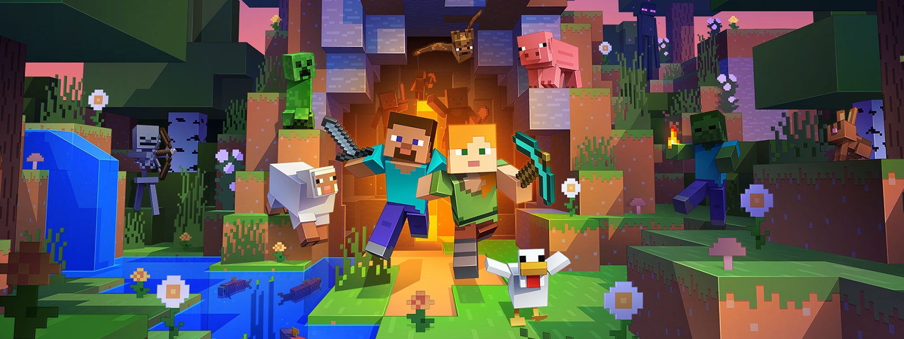

Burada sizlere "Çok Oyunculu Oyunlar" tavsiye edeceğim.
İlk tavsiye ettiğim oyun: MİNECRAFT

Minecraft'ın geliştiricisi, Markus Alexej "Notch" Persson programlamaya beş yaşında başlamış. Babası Markus'a Commodore 128 ev bilgisayarı almış ve Markus, "type-in" programlarına odaklanmış bir bilgisayar dergisine abone olmuştur. Yaptığı deneyler sonucu sekiz yaşında ilk programını yazmıştır. Profesyonel olarak da, Wurm Online gibi oyunlarda ve King.com'da oyun programcısı olarak çalışmıştır.
Minecraft 10 Mayıs 2009 tarihinde geliştirilmeye başlanmıştır. Markus Persson, King.com'daki işinden çıktıktan sonra bağımsız program yazma ve geliştirmeye odaklanmıştır. Markus Persson, Minecraft'ı yazmak için Dwarf Fortress, RollerCoaster Tycoon ve Dungeon Keeper gibi oyunlardan ilham almıştır. Oyunun temellerinin ne olması gerektiğini düşünen Markus, Infiniminer adlı bir oyunu keşfetmiştir ve TIGSource 24 Şubat 2021 tarihinde Wayback Machine sitesinde arşivlendi. forumlarındaki kullanıcılarla oynamıştır. O zamanda Markus, izometrik inşa oyun fikirlerini kafasında canlandırırken, bu düşüncelerini denemek için prototipler yazmıştır.
Microsoft, 17 Eylül 2014 sabahı Minecraft'ı ve oyunun yapan stüdyo Mojang Studios'u satın alacağı haberlerini onayladı. Tam 2.5 Milyar dolarlık bir fiyata yapılan bu devir telaş getirsede aynı istikrarıyla hayatına devam etti. Mojang Studios'un devredilmesiyle beraber Markus, hayatına devam etti.
Satın alma işinde düşündürücü olan kısım ise oyunun var olmasını sağlayan Markus "Notch" Persson'un Microsoft ekibine katılmaması oldu. Mojang Studios takımından gelen bir bildiriye göre Notch, eski CEO Carl ve kurucu üye Jakob ekibi terk ediyorlar ve geride kalanlar bu üç programcının yapacakları projeler konusunda bilgi sahibi değiller. Her ne kadar Minecraft ile alakalı olmasa da güzel işler yaratacaklarından emin olan üçlüye Mojang Studios bol şans diledi.
Sıradaki oyunumuz ise: TRANSFORMİCE
Oyunun temel amacı, bir harita üzerinde yerleştirilmiş bir parça peyniri almaktır. Oyunda hareket etmek, zıplamak ve eğilmek için ok tuşları veya WASD tuşları kullanılır. Oyuncuların peynir toplayabilmesi için peynire dokunması gerekir. Oyuncunun fare deliğine girebilmesi için peynir almak zorunludur. Peynir ve fare deliklerinin sayısı haritadan haritaya değişebilir. Oyuncular yuvaya girdiğinde gerçek zamanlı olarak güncellenen skor tablosuna puan eklenir. Deliğe birinci, ikinci veya üçüncü olan oyuncuya fazladan puan gelir. Toplanan peynir sayısı oyuncunun profiline kaydedilir. Ayrıca profilde oyuncunun kaç kez birinci olarak fare deliğine girdiği gibi bilgiler de kayıtlıdır. Her haritada iki dakikalık süre vardır, süre bitince yeni bir harita yüklenir. Tüm fareler deliğe girdiği anda veya öldüğü anda da bir sonraki haritaya geçiş yapar. Ölüm skorborda bir puan ekler.
Son olarak tavsiye ettiğim oyun: SEA OF THİEVES
Sea of Thieves, birinci şahıs bakış açısıyla oynanan, korsan temalı bir aksiyon-macera kooperatifi çok oyunculu oyunudur. Oyun Windows tabanlı kişisel bilgisayarlar ve Xbox One video oyun konsolları arasında çapraz platform oynamaya sahiptir. Bir grup oyuncu bir korsan gemisi vasıtasıyla açık bir dünyayı dolaşmakta ve keşfetmekte ve direksiyon, kaldırma yelkenleri, navigasyon, ateş topları ve diğer görevler gibi farklı roller üstlenmektedir. Oyuncular araştırmalara başlar, yağma tutar ve diğer oyuncularla savaşa girerler. Thieves Denizi, oyuncuların gruplarının maceraları boyunca düzenli olarak karşılaşacakları ortak bir dünya oyunu. Oyun, karikatürize bir sanat stiline ve oyuncuların gemi toplarına atılmasına izin veren abartılı fizik özelliklerine sahiptir.